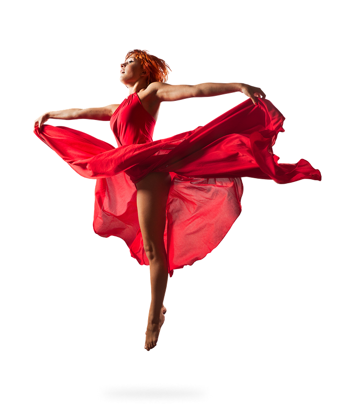
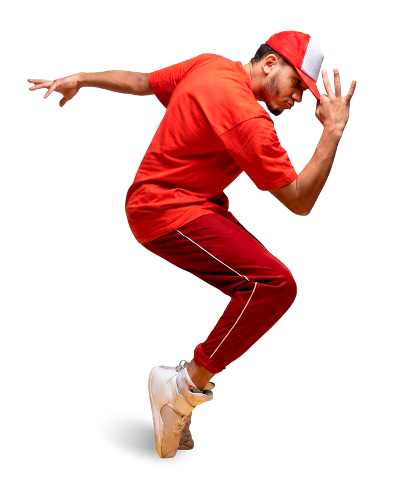

43
anos de história
+5K
de coreografias inscritas na última edição
+470K
espectadores presenciais na última edição

Desde 2005 o Festival de Dança de Joinville
é reconhecido como o maior festival de dança do mundo
“A dança é a arquitetura do invisível que dobra as esquinas do tempo; ela transforma o asfalto rígido em solo fértil e faz da pressa urbana o compasso de uma vida que, enfim, respira.”
Inspirado em Rudolf von Laban
Noite de abertura
20/07
Espetáculo: Dom QuixoteCia Jovem Basileu França-Goias
Noite de gala
20/07
Marcos Ayala The Tango Company:Espetáculo: De Tango y Sombras Marcelo Gome e Luiza Lopes:
Apresentação: Romeu e Julieta Antonio Casalinho e Margarita Fernandes:
Apresentação especial
Noite dos campeões
20/07
Espetáculo: Dom QuixoteCia Jovem Basileu França-Goias
